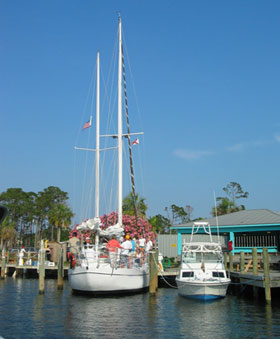

This is the Dolphin Racer at dock. We leave daily at 4:00 p.m.and 6:30 p.m. for 1-1/2 hour cruises. There are snacks and restrooms available on board. We welcome children of all ages. Our ship is a U.S. Coast Guard approved vessel and our captain is a former member of the Coast Guard. Call The Club desk for reservations.
If you plan to join us, please apply sunscreen liberally before you leave. A hat that can be securely tied to your head is a must. Be sure to bring your video camera because you will not want to miss the opportunity to take some great footage of the dolphins at play.